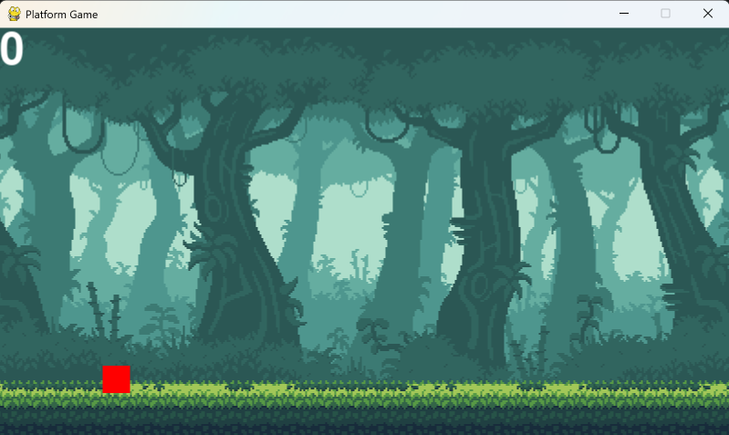

Teaching Experience
Teaching Python Through Student-Developed Curriculum
Connecting Python programming with an interactive game project and student-developed learning material.

Project overview
This teaching project centers on learning Python through student-developed curriculum. The accompanying game provides a concrete context for programming: code is connected to an interactive experience that learners can inspect, change, and discuss.
Learning approach
A game offers a useful setting for connecting programming ideas with visible behavior. Changes to movement, rules, or interaction give learners a way to reason about what code does. The project brings this hands-on context together with the communication involved in developing learning materials for others.
Why it matters
Explaining a programming concept requires more than making code run; it requires making the reasoning understandable. This work reflects an interest in teaching as part of computer science practice, using an approachable project to connect technical implementation with clear explanation.